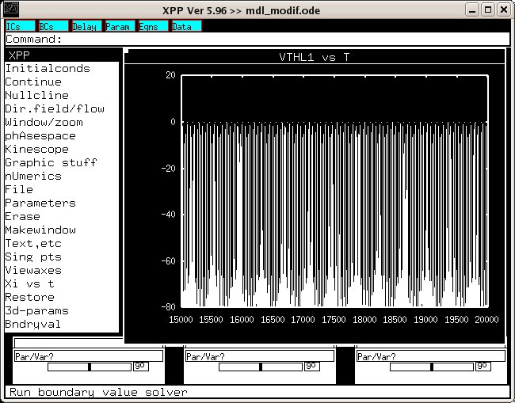

##########
# README #
##########
This modified version of the model by Rubin and Terman (2004) was used
in the paper: "Is a computational model useful to understand the
effects of deep brain stimulation in Parkinson's disease?", Journal of
Integrative Neuroscience, 5(4):551--559.
Abstract:
A growing number of computational models have been proposed over the
last few years to help explain the therapeutic effect of deep brain
stimulation (DBS) on motor disorders in Parkinson's disease
(PD). However none of these has been able to explain in a convincing
manner the physiological mechanisms underlying DBS. Can these models
really contribute to improve our understanding? The model by Rubin and
Terman \cite{Terman2004} represents one of the most comprehensive and
biologically plausible models of DBS published recently. We examined
the validity of the model, replicated its simulations and tested its
robustness. While our simulations partially reproduced the results
presented by Rubin and Terman \cite{Terman2004} several issues were
raised including the high complexity of the model in its non
simplified form, the lack of robustness of the model with respect to
small perturbations, the nonrealistic representation of the thalamus
and the absence of time delays. Computational models are indeed
necessary but they may not be sufficient in their current forms to
explain the effect of chronic electrical stimulation on the activity
of the basal ganglia (BG) network in PD.
The zipfile includes two files mdl_modif.ode and equations.pdf.
* mdl_modif.ode is a modification of mdl.ode (original model) where we
changed the way synapses from STN to GPi are programmed. If you
examine closely Terman`s model.ode file you will find that synapses
from STN to GPi are modeled differently from other synapses (without
the "s" variable). To be consistent with Terman 2004 paper, we
modified this. We also changed the way the HFS signal is programmed
in order have easier control on the pulse width. Control of
parkinsonian or normal states is controled through "step" signals.
* equations.pdf is a pdf result where We have tried to document all
the details of Terman`s model as specified in his file and the
modifications we made.
Example model usage:
Extract this archive and run the xpp program with a command like
xppaut mdl_modif.ode
After a few minutes the simulation will (hopefully) recreate
